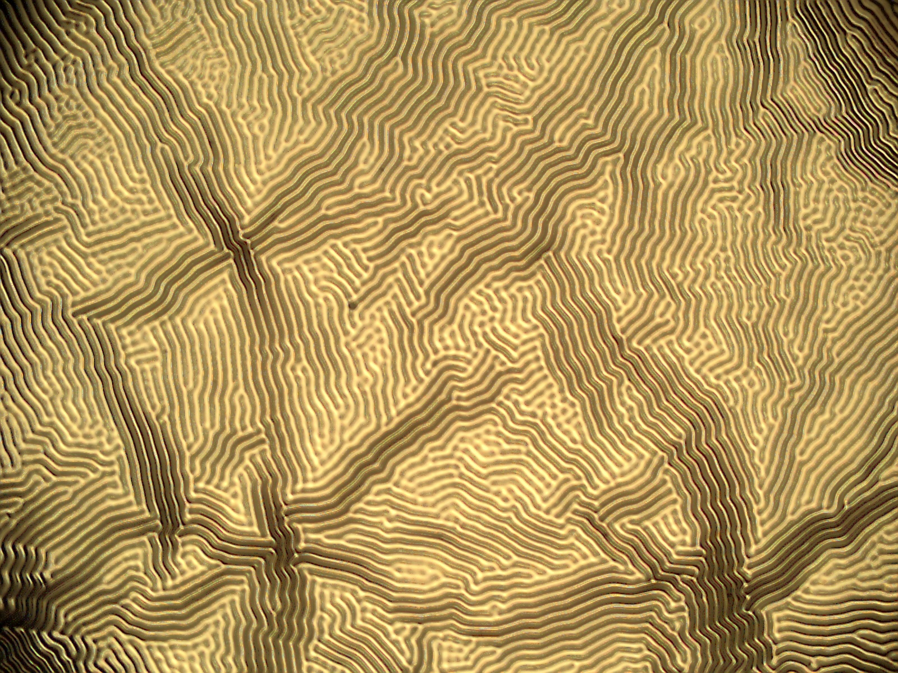
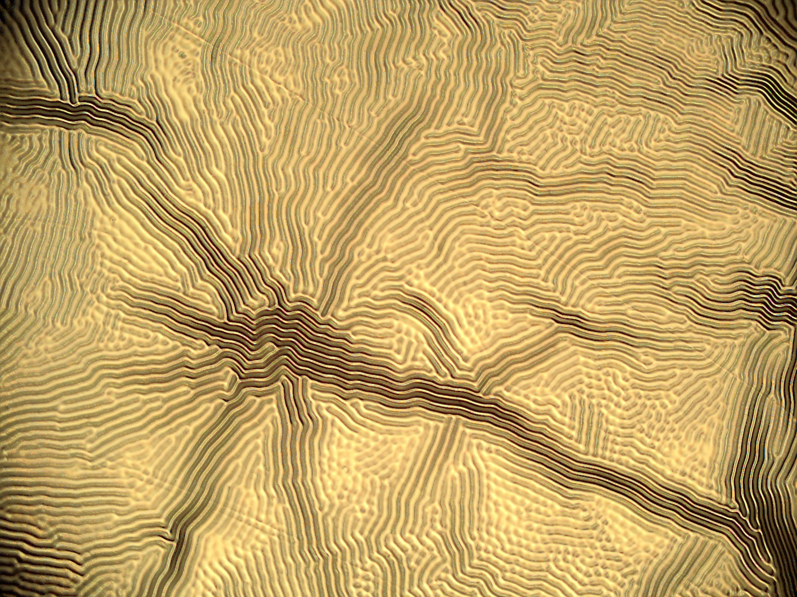
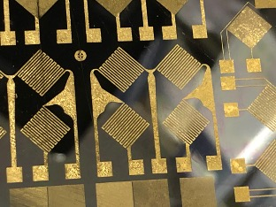

Tunable Wrinkling & Patterning
of Gold on PDMS
Negative Resist Processing | Flexible Substrate Metallization
📅 Period: 2020 – 2021
🧪 Key Techniques: PDMS Spin Coating | E-beam Evaporation | AZ nLof 2020 Negative Resist | Lift-Off
🎭 Role: Sole process developer and fabricator




Project Overview
This project focuses on engineering controlled micro-wrinkling in gold thin films deposited on PDMS (polydimethylsiloxane) elastomeric substrates. By leveraging the thermal and mechanical mismatch between the metal film and the soft polymer substrate, I developed a reliable method to induce tunable wrinkle patterns. The process integrates negative resist photolithography (AZ nLof 2020), E-beam evaporation of Cr/Au, and lift-off techniques to achieve selectively patterned wrinkled regions for flexible electronics applications.
Motivation
Wrinkled metal films on elastomers have significant applications in:
- Stretchable Electronics: Wrinkles accommodate mechanical strain without electrical failure
- Tunable Optics: Surface morphology affects light reflection/diffraction
- Strain-Responsive Sensors: Wrinkle amplitude changes with applied strain, enabling sensing
- Adhesion Control: Wrinkled surfaces exhibit tunable wetting/adhesion properties
My Contributions & Key Achievements
- Wrinkle Engineering: Utilized intrinsic stress from thermal expansion mismatch (PDMS curing at 80°C → room temperature) to create controlled micro-wrinkles on Au/PDMS
- Process Development: Optimized spin-coating parameters for PDMS (200 rpm → 1000 rpm), curing conditions (12h at 80°C), and metal deposition (150Å Cr adhesion layer + 1000Å Au conductor)
- Negative Resist Patterning: Successfully implemented AZ nLof 2020 negative resist with 80 mJ/cm² exposure for selective metal patterning
- Lift-Off Optimization: Developed Remover PG soak protocol (4 hours) for clean metal lift-off on flexible PDMS
- Application Insight: Demonstrated a low-cost, scalable method for surface morphology tuning in soft electronics
Complete Fabrication Process
Step 1: Substrate Preparation
Silicon wafer cleaned with acetone (120 sec soak), IPA rinse (60 sec), and DI water rinse. SRD (Spin-Rinse-Dryer) pre-programmed recipe for final cleaning. Dehydration contact bake: 60 sec at 100°C.
Step 2: PMMA Sacrificial Layer (Optional)
PMMA spin-coated (500 rpm for 5 sec ramp, then 3000 rpm for 30 sec). Soft bake at 180°C for 60 sec.
Step 3: PDMS Deposition & Curing
PDMS mixture (10:1 base to curing agent) spin-coated at 200 rpm for 5 sec, then 1000 rpm for 50 sec. Cured in oven at 80°C for 12 hours. This curing temperature creates thermal mismatch with subsequent metal deposition.
Step 4: Metal Deposition (E-beam Evaporation)
Adhesion Layer: Chromium (150Å at 2 Å/s)
Conductor Layer: Gold (1000Å at 1.2 Å/s)
Measured thickness: Cr = 30.5 nm, Au = 115.7 nm
Step 5: Photolithography (Negative Resist)
HMDS Adhesion Promoter: 500 rpm → 3000 rpm
AZ nLof 2020 Negative Resist: 500 rpm → 3000 rpm, 35 sec
Soft Bake: 70 sec at 110°C (pre-exposure)
UV Exposure: OAI 800 Mask Aligner, 80 mJ/cm²
Post-Exposure Bake: 70 sec at 110°C
Development: AZ 300 MIF, 60 sec (neat)
Step 6: Descum (O₂ Plasma)
MARCH RIE system: O₂ plasma at 100W for 30-60 sec to remove residual resist in exposed areas.
Step 7: Metal Etch (for patterned wrinkling)
Gold Etchant: Remove exposed gold
Chromium Etchant: Remove exposed chromium
DI Water Rinse: 3 minutes
Step 8: Lift-Off
Remover PG soak for 4 hours (until complete). Removes remaining resist, leaving selectively patterned metal on PDMS.
Step 9: Wrinkle Formation
Thermal mismatch between PDMS (cured at 80°C) and metal (deposited at room temperature) creates compressive stress. Upon cooling, PDMS contracts more than the metal film, inducing controlled micro-wrinkles.
Process Runcard Summary
| Step | Area | Tool | Process | Key Parameters |
|---|---|---|---|---|
| 1-5 | PHOTO | Various | Wafer Cleaning & Dehydration | Acetone 120s, IPA 60s, DI rinse, SRD |
| 6-7 | PHOTO | HEADWAY/HOTPLATE | PMMA Sacrificial Layer | 500→3000 rpm, bake 180°C 60s |
| 8-9 | PHOTO | HEADWAY/OVEN | PDMS Deposition & Curing | 200→1000 rpm, 80°C 12h |
| 10-11 | PVD | CHA EVAPORATOR | Cr/Au Deposition | Cr 150Å (2Å/s), Au 1000Å (1.2Å/s) |
| 12-14 | PHOTOLITHOGRAPHY | HEADWAY/HOTPLATE | HMDS + AZ nLof 2020 | 3000 rpm, bake 110°C 70s |
| 15-17 | PHOTOLITHOGRAPHY | OAI 800/DEVELOP | Exposure & Development | 80 mJ/cm², AZ 300 MIF 60s |
| 22 | DESCUM | MARCH RIE | O₂ Plasma | 100W, 30-60s |
| 23-26 | WET DECK | FUME HOOD | Metal Etch & Lift-Off | Au etch, Cr etch, Remover PG 4h |
Wrinkle Engineering Mechanism
Physics of Wrinkle Formation:
The wrinkle pattern arises from the thermal expansion mismatch between PDMS and the Cr/Au metal film:
- PDMS is cured at 80°C (high temperature)
- Metal is deposited at room temperature (~25°C)
- Upon cooling, PDMS contracts more than the metal film (coefficient of thermal expansion mismatch)
- The metal film is under compressive stress → buckles into periodic wrinkles
Tunable Parameters:
- Metal Thickness: Thicker films → larger wrinkle wavelength
- Curing Temperature: Higher ΔT → larger amplitude
- PDMS Thickness: Affects wrinkle wavelength
- Pattern Geometry: Selective etching creates confined wrinkle regions
Equipment & Tools Used
- Spin Coater (Headway Research)
- Despatch Oven (PDMS curing)
- CHA E-beam Evaporator (Cr/Au deposition)
- OAI 800 Mask Aligner (UV exposure)
- Hotplates (soft/post-exposure bake)
- MARCH RIE (O₂ plasma descum)
- Develop Deck (AZ 300 MIF development)
- Wet Deck (Gold/Chromium etch)
- Solvent Hood (Remover PG lift-off)
- Optical Microscope (inspection)
- Alpha Step Profilometer (thickness measurement)
Materials Used
- Substrate: Silicon wafer
- Elastomer: PDMS (Sylgard 184, 10:1 ratio)
- Sacrificial Layer: PMMA (optional)
- Adhesion Promoter: HMDS
- Negative Resist: AZ nLof 2020
- Adhesion Layer: Chromium (150Å)
- Conductor: Gold (1000Å)
- Developer: AZ 300 MIF
- Etchants: Gold etchant, Chromium etchant
- Lift-Off Solvent: Remover PG
Fabrication Results


Skills Acquired
Potential Applications
- Stretchable Electronics: Wrinkled metal films accommodate mechanical strain without electrical failure
- Wearable Sensors: Strain-responsive resistance change for motion monitoring
- Tunable Optics: Surface morphology affects light reflection/diffraction
- Adhesion Control: Wrinkled surfaces exhibit tunable wetting properties
- Soft Robotics: Stretchable interconnects for robotic skin
Downloads
Challenges & Solutions
| Challenge | Solution |
|---|---|
| PDMS adhesion to silicon wafer | Dehydration bake at 100°C + HMDS adhesion promoter |
| Uneven PDMS thickness | Optimized spin parameters: 200 rpm → 1000 rpm with controlled ramp |
| Metal lift-off on soft PDMS | Extended Remover PG soak (4 hours), gentle agitation |
| Non-uniform wrinkle patterns | Controlled cooling rate, optimized metal thickness ratio (Cr 150Å / Au 1000Å) |
| Resist residue after development | O₂ plasma descum (100W, 30-60s) before metal deposition |
Connection to My Research
This project directly supports my broader research in flexible and wearable sensors:
- Flexible Pressure Sensors: Wrinkled metal films can serve as stretchable electrodes for capacitive/piezoresistive sensors
- PDMS Processing: Expertise in PDMS spin-coating and curing used in multiple sensor projects
- Negative Resist Lithography: AZ nLof 2020 processing skills applied to other device fabrications
- Lift-Off on Flexible Substrates: Critical technique for metallizing PDMS without damage
Conclusion
This project successfully developed a reliable method for creating tunable micro-wrinkles in gold thin films on PDMS substrates. The process integrates PDMS spin-coating, E-beam evaporation of Cr/Au, negative resist photolithography (AZ nLof 2020), and lift-off techniques. Key achievements include: (1) optimized PDMS curing at 80°C for 12h to create thermal mismatch, (2) successful Cr (150Å) and Au (1000Å) deposition with measured thicknesses of 30.5 nm and 115.7 nm respectively, (3) implementation of AZ nLof 2020 negative resist with 80 mJ/cm² exposure and AZ 300 MIF development, and (4) clean lift-off using Remover PG (4-hour soak). The resulting wrinkled metal films exhibit controlled periodic structures with potential applications in stretchable electronics, tunable optics, and strain-responsive sensors. This work demonstrates a low-cost, scalable approach for surface morphology engineering in soft electronics.